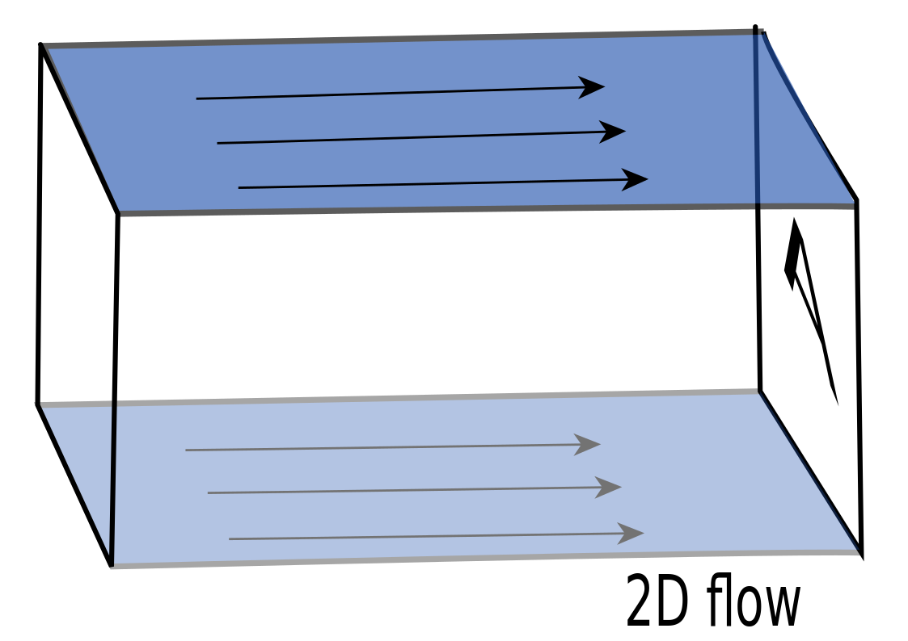
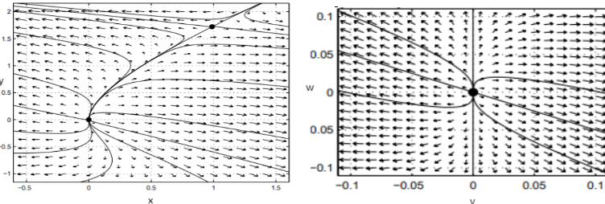
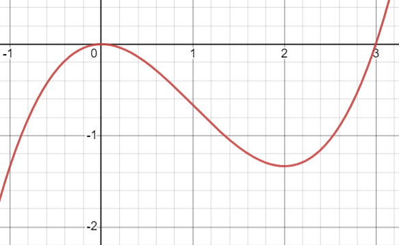
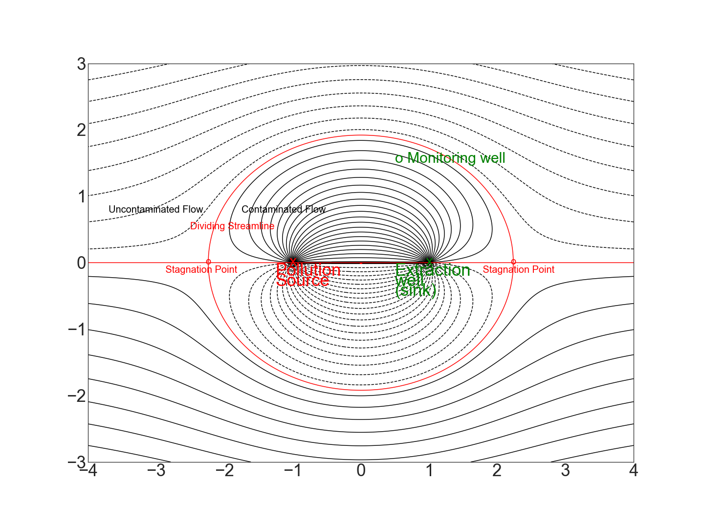

13.3. Idealized Groundwater Flow#
13.3.1. Two-Dimensional Flow and the Continuity Equation#
Having introduced differentiable (also called analytic) functions in Section 2, we now turn to the topic of how these functions are used to model idealized 2-dimensional groundwater flow. We will also show how isolated singularities (points where a function is not differentiable) are used to describe sources or sinks. In modeling groundwater flow, we assume that the flow is two dimensional with \(x\) corresponding to the east-west and \(y\) to the north-south directions. In particular, such flow in 3 dimensions does not depend on \(z\); that is, any plane parallel to the \((x,y)\)-plane has an identical flow pattern. The groundwater flow equation used to model such flow in 3 dimensions results when the continuity equation is combined with Darcy’s Law (Section 3.2) The continuity equation relates the rate of change in density at a given point \((x,y,z)\) to the divergence of the mass flow rate. This flow rate is the product of the density \(\rho(x,y,z;t)\) (mass per unit volume at the position \((x,y,z)\) and time \(t\)) times the fluid velocity \(\vec{v}(x,y,z;t)=\mathbf{V}\) at the same point and time. The velocity is assumed to be continuously differentiable.
The continuity equation is given by the equation
This equation is essentially a statement of the conservation of mass, meaning mass is neither created nor destroyed. Note that the continuity equation does not hold at a source or sink since the velocity is undefined at such points.
The continuity equation may be understood mathematically by defining a “control” volume region \(\mathcal{V}\) bounded by a surface \(\mathcal{S}\). Fluid flows into and out of this control volume. Since no mass is created or destroyed within \(\mathcal{V}\), any increase in the fluid density within \(\mathcal{V}\) over time is due solely to mass flowing into \(\mathcal{V}\) through the boundary surface \(\mathcal{S}\). We express this relationship as
where \(dV\) is an infinitesimal volume element, \(dS\) is an infinitesimal surface area element, and \(\mathbf{\hat{n}}\) is the outward unit vector normal to the surface. Using the divergence theorem, we have:
Finally, since the mathematical volume \(\mathcal{V}\) is arbitrarily chosen and could be infinitesimal, the integrand in the last integral must itself be equal to 0:
which is the continuity equation previously stated. For an incompressible fluid, \(\frac{\partial \rho}{\partial t} = 0\), which is also an underlying assumption about the fluid flow discussed in this module.
Exercise#
Exercises
3.1.1 For the density function \(\rho (x,y) = 2e^{-y}\) and the velocity vector \(\mathbf{V} (x,y) = \langle x^2 + y^2,2x\rangle,\) compute the following to evaluate whether \(\rho (x,y)\) and \(\mathbf{V} (x,y)\) satisfy the continuity equation:
a) \(\frac{\partial \rho}{\partial t}\)
b) \(\nabla \cdot \mathbf{V}\)
c) \(\frac{\partial \rho}{\partial t}\) + \(\nabla \cdot \rho \mathbf{V}\). Does this equal 0 as in the continuity equation?
13.3.2. Darcy’s Law and the Velocity Potential \(\Phi\)#
To analyze groundwater flow, we note that the velocity vector \(\mathbf{V}\) depends on the type of liquid, the characteristics of the surrounding material, and the pressure at any given point. Darcy’s Law summarizes these relationships. For the groundwater flows we are considering, Darcy’s Law states that the velocity \(\mathbf{V}\) is given by
where \(k\) is the permeability of the surrounding material, \(\mu\) is the viscosity of the liquid, and \(p\) is the pressure. The fluid flow moves in the direction from higher to lower pressure, that is, the direction of \(-\nabla p\). Incidentally, Darcy’s Law has many analogues in other physical situations, such as heat transfer or electricity and magnetism. All of these feature vector fields which depend on the negative gradient of a scalar quantity.
From vector calculus, we are familiar with conservative vector fields that can be written as the gradient of a scalar potential function. In the case of Darcy’s Law, the fluid velocity \(\mathbf{V}\) has a velocity potential \(\Phi=\frac{k}{\mu}p\) such that
Note that fluid flows from higher to lower values of the velocity potential \(\Phi\) since we remarked earlier that fluid flows from higher to lower pressure \(p\).
Since we assume that the groundwater flow is incompressible (constant density \(\rho\)), the continuity equation reduces to
Combining these results, we see that for a 2-dimensional flow, the potential \(\Phi(x,y)\) satisfies Laplace’s equation:
In other words, for the flows we consider, the velocity potential \(\Phi(x,y)\) will be a harmonic function.
Exercises#
Exercises
3.2.1 For the density function \(\rho (x,y) = 2x^2e^{-y}\), compute \(\nabla \rho\).
3.2.2 Given the velocity vector \(\mathbf{V} (x,y) = \langle 2xy, x^2 - y^2 \rangle,\)
a) Show that \(\nabla\cdot\mathbf{V}=0.\)
b) Find a function \(\Phi\) such that \( \mathbf{V}=-\nabla \Phi.\)
c) Show that the \(\Phi\) you obtained in part b) is harmonic.
13.3.3. The Stream Function \(\Psi\) and Complex Potential \(\Omega\)#
Since all harmonic functions have a harmonic conjugate, we know that the 2-dimensional velocity potential \(\Phi(x,y)\) from the previous section has a harmonic conjugate which we designate \(\Psi(x,y)\) and call a stream function.
\(\Phi(x,y)\) and \(\Psi(x,y)\) are related by the Cauchy-Riemann (C-R) Equations.
Cartesian form:
Polar form:
Given a velocity potential \(\Phi(x,y)\), we can apply our method from the section on Harmonic Conjugates to find a stream function \(\Psi(x,y)\), and thereby obtain a differentiable function \(\Omega(z)=\Phi+i\Psi\) called a complex potential. The level curves \(\Phi\)=constant are called equipotentials, and the level curves \(\Psi=\) constant are called streamlines. Our 2D groundwater modeling approach is based on the complex potential \(\Omega\), and its associated velocity potential \(\Phi=Re(\Omega)\) and stream function \(\Psi=Im(\Omega)\).
Example#
Given the velocity potential \(\Phi(r)= k \ln r\) where =\(\sqrt{x^2+y^2}\) and \(k\) is a real constant, find the stream function \(\Psi\). Show that the equipotentials and streamlines are orthogonal.
Solution.
First we take the partial derivative of \(\Phi\) with respect to r,
Using the polar Cauchy-Riemann (C-R) equation \(\frac{\partial \Phi}{\partial r}= \frac{1}{r}\frac{\partial \Psi}{\partial \theta}\), we have
Next we take the derivative of \(\Psi\) with respect to \(r\) and use the other polar C-R equation \(-\frac{\partial \Psi}{\partial r}=\frac{1}{r}\frac{\partial \Phi}{\partial \theta}\) to solve for \(t(r)\),
Thus, the stream function is \(\Psi= k\theta + \, constant.\) If we let \(t(r)=0\), then \(\Omega=\Phi+i\Psi=k\ln r + ik \theta = k\log(z)\). For this complex potential \(\Omega(z)=k\log z\), the streamlines \(\theta=\) constant are radial lines which include the origin.
Note that the equipotentials are given by \(\ln r\) = constant or equivalently \(r=\) constant and hence are concentric circles centered at the origin. This illustrates the general fact that the streamlines and equipotentials are orthogonal.
Exercise#
Exercise
3.3.1 Let \(\Phi(x)= - \frac{q_u}{A}x+\Phi_0\) be the velocity potential for uniform flow. Find the corresponding stream function \(\Psi\) and complex potential \(\Omega\). Then show that the equipotentials and streamlines are orthogonal.
13.3.4. Uniform Flow#
Uniform flow means both the flow rate \(q_u\) (\(\frac{m^3}{s}\)) and the velocity vector \(<V_x,V_y>\) are constant at each point. If the flow is in the \(x\) direction, then \(V_y=0\) and \(V_x=q_u/A\), where \(A\) is the cross-sectional area through which such flow in 3 dimensions passes (see figure below). The flow pattern is exactly the same in every plane parallel to the original.
{kind=link}
In this case, Darcy’s Law becomes
Integrating, we get
For example, set \(-\frac{q_u}{A}=1\) and \(\Phi_0=0\) so in this case \(\Phi=-x\). Since \(\Psi_y(x,y)=\Phi_x=-1\), we can let \(\Psi(x,y)=-y\) and obtain the complex potential is \(\Omega(x,y)=-x-iy=-z\)

Exercise#
Exercise
3.4.1 Consider the uniform flow with complex potential \(\Omega(z)=z\). Find \(\Phi\) and \(\Psi\), and describe the direction of the flow.
13.3.5. Sources and Sinks#
For a source or sink with a constant flow rate \(q_w\) (\(\frac{m^3}{s}\)) in the \(r\) (radial) direction (\(q_w>0\) for a source and \(q_w<0\) for a sink), the area \(A\) through which such flow in 3 dimensions passes is the lateral surface of a circular cylinder with radius \(r\) and height \(h\): \(A=2\pi r h\) (see figure below). The flow pattern is assumed to be exactly the same in each plane parallel to the original.
{kind=link}
Darcy’s law becomes
so \(\Phi(r)= - \frac{q_w}{2\pi h} \ln r \). Since fluid flows from higher potential to lower potential, the velocity potential \(\Phi\) decreases with increasing \(r\) for a source ( \(q_w>0\) ) and increases with increasing \(r\) for a sink \((q_w<0\)). The equipotential lines (level curves for \(\Phi\)) have the form \(\ln(r)=constant\), or more simply \(r\) = constant. The equipotentials are concentric circles centered at the origin.

Setting \(\Phi_0=0\), as we showed earlier in introducing the stream function and complex potential, a corresponding stream function is \(\Psi=- \frac{q_w}{2\pi h}\theta=- \frac{q_w}{2\pi h}\arg(z)\) so the streamlines have the form \(\Psi=- \frac{q_w}{2\pi h} \arg z=- \frac{q_w}{2\pi h}\arctan(\frac{y}{x})\) = constant, or more simply, \(\theta\) = constant. The streamlines are half-lines which radiate to or away from the origin. Note that in this case, we can use a potential of the form \(\Omega(z)=- \frac{q_w}{2\pi h}(\ln r+\theta)=- \frac{q_w}{2\pi h}\log(z)\) to model a sink (\(q_w<0\)) or a source (\(q_w>0\)) at the origin. (More generally, if the source or sink is located at \(z_w=(x_w,y_w)\), then a complex potential of the form \(\Omega(z)=- \frac{q_w}{2\pi h} \log(z-z_w)\) is used to model the source or sink.)
Example#
Consider a complex potential for an equal strength source (\(q_w/h=1\)) at A(0,0) and sink (\(q_w/h=-1\)) at C(1,1): \(\Omega(z) =\frac{-1}{2\pi}[\log(z)-\log(z-(1+i))\)]. In this case, the velocity potential is given by
The stream function must account for the choice of branch cuts. Suppose we specify the branches as shown in the figure below, namely a branch cut in the direction of the negative x-axis at the branch point A(0,0) and a branch cut in the direction of the positive x-axis at the branch point C(1,1). The stream function is in this case
\( \Psi(x,y)= \frac{-1}{2\pi}[\theta(z,z_{source})-\theta(z,z_{sink})],\, z=x+iy.\)

The equipotentials and streamlines are shown in the figure below.
{kind=link}
13.3.6. The Rankine Oval#
The superposition principle for flows (based on superposition of harmonic functions) says that to find the complex potential \(\Omega(z)\) for a uniform flow with a source at \(d_1\) and a sink at \(d_2\), we add together the three individual complex potentials:
If the flow rates are balanced (i.e. have equal strength \(q_{source}=-q_{sink}=q_s\)), and the sink and source positioned symmetrically about the origin (\(-d_1=d_2=d>0)\) then the complex potential has the form
where \(2d\) is the distance between the source and sink.
This complex potential \(\Omega(z)\) can be used to model uniform flow around an oval boundary known as Rankine’s oval which contains in its interior the flow from source to sink. The figure below shows streamlines for the complex potential \(\Omega(z)=-z-2\log(\frac{z+1}{z-1})\). A source is located at (-1,0) and equal strength sink at (1,0). Rankine’s oval is the dividing streamline between uncontaminated and contaminated flow. A separation of the flow occurs at the stagnation point where the oval intersects the horizontal axis through the center of the oval.
{kind=link}
In general, the complex velocity \(W\) is defined to be the negative of the derivative of \(\Omega\). That is, \(W=-\frac{d\Omega}{dz}\). The stagnation points, or critical points where the velocity is zero and thus the flow can abruptly change directions, are obtained by setting \(W=0\). In our example,
which yields the stagnation points \(z=\pm \sqrt{d^{2}+\frac{A}{q_{u}}\frac{q_{s}}{\pi h}d}\). A streamline which passes through a stagnation point is called a dividing streamline. The value of the stream function \(\Psi\) at a stagnation point gives the value of the level curve representing the dividing streamline. If we think of the source as a pollution source, then the Rankine oval is the dividing streamline passing through the two stagnation points and thus indicates the boundary between uncontaminated and contaminated flow.
In the limit as \(d\rightarrow 0\) and \(m=\frac{q_s}{2\pi h} \rightarrow \infty\) in such a way that \(2dm=\sigma\) remains finite, a dipole is created with a circular Rankine oval. In this case, the complex potential takes the form \(\Omega(z)=-\frac{q_u}{A}z-\frac{\sigma}{z}\) (see Exercise 3) and is used to represent uniform flow around a circular boundary.
Exercises#
Exercises
3.6.1 What scenario is modelled by the complex potential \(\Omega=-z-2 \log(z+1)\)? Make a sketch of the streamlines corresponding to this potential.
3.6.2 The figure below shows the streamlines for the potential
{kind=link}
a) Find the stream function \(\Psi(x,y).\)
b) How many sinks and sources are there?
c) Which have greater strength, the sources or the sinks?
d) If contaminant flows from the sources along the streamlines, will it be contained by the sinks (extraction wells)?
e) What are the approximate coordinates of the stagnation points?
f) What equation is used to find the exact coordinates of the stagnation points?
Use a centered-difference quotient definition of derivative \(\frac{d}{dz} \log z = \frac{\log(z+d)-\log(z-d)}{2d}\) to show that
where \(m=q_s/(2\pi h)\) and \(\sigma=2dm.\)